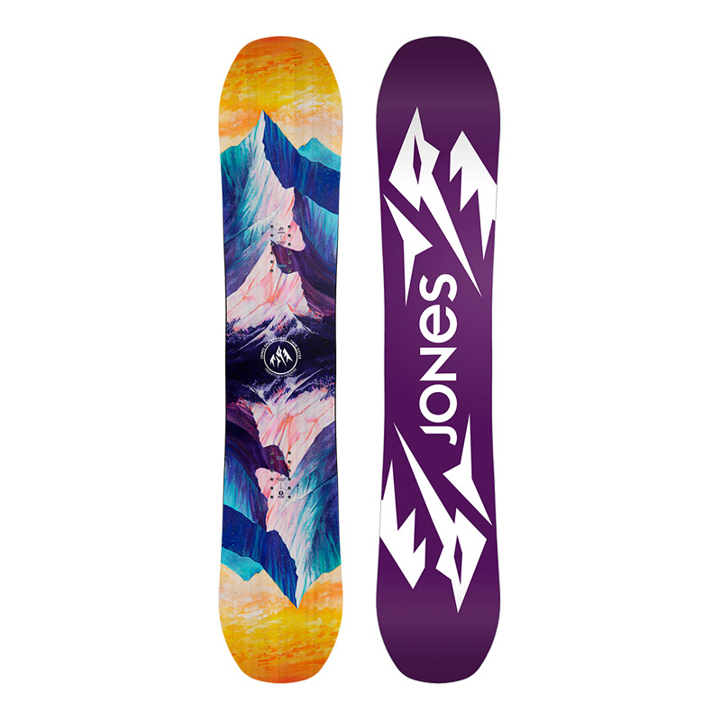

Это наиболее агрессивная из всех моделей в All Mountain коллекции.
Она для тех парней, которые не любят дожидаться, пока доедет их семейство, друзья или девушки,
им нужно спускаться быстро и сразу готовиться к следующему спуску. Чем сильнее вы грузите эту доску,
тем большую отдачу вы получаете в ответ. Технология Freestyle TBT гарантирует мощную и быструю перекантовку.
Эта доска - прекрасный выбор для тех,
кто хочет освоить всё горное пространство на хорошей скорости и с предельной точностью.
- Женский сноуборд
- Прогиб: Camrock
- Оплетка: Bi-Ax
- Сердечник: Master Core (Тополь/Павловния)
- Скользящая поверхность: Sintered 7000
- Форма: Directional Twin - Camber
- Жесткость: 6/10
- Предназначение: All Mountaini>
- Уровень катания: Начинающий/Средний
- Цена: 28000